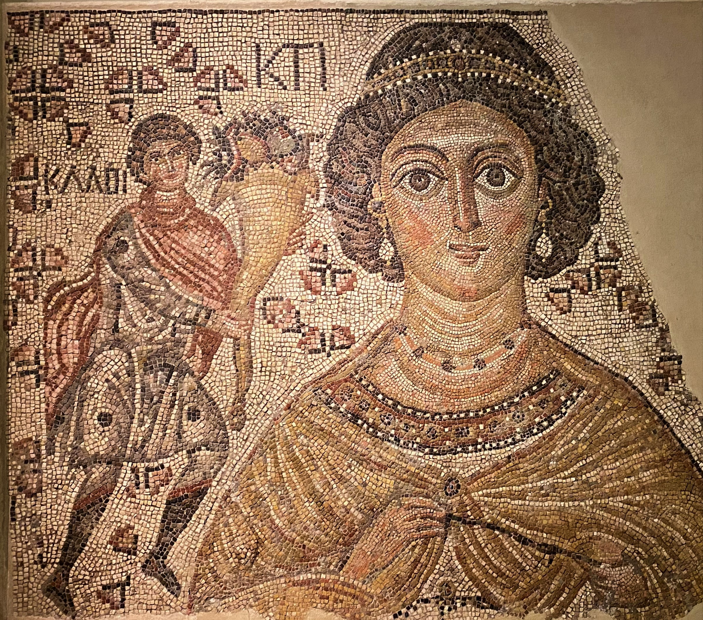
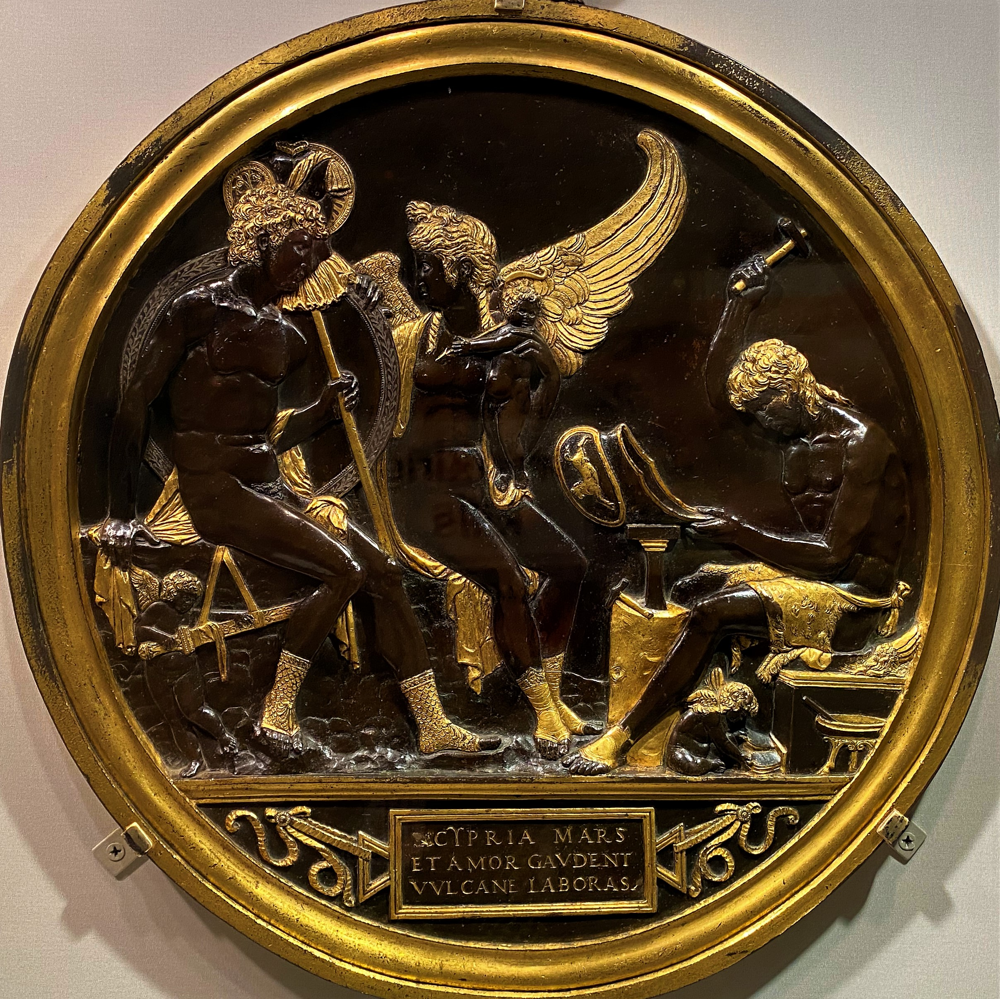
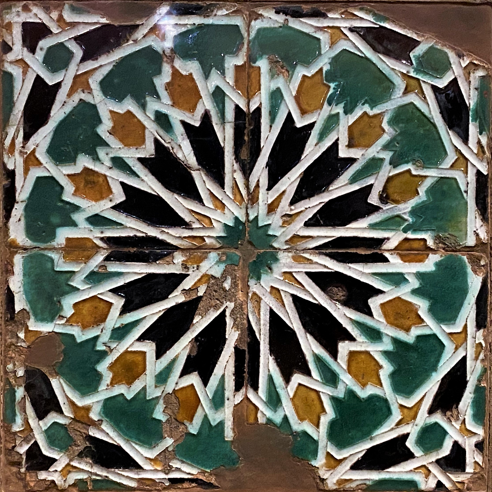
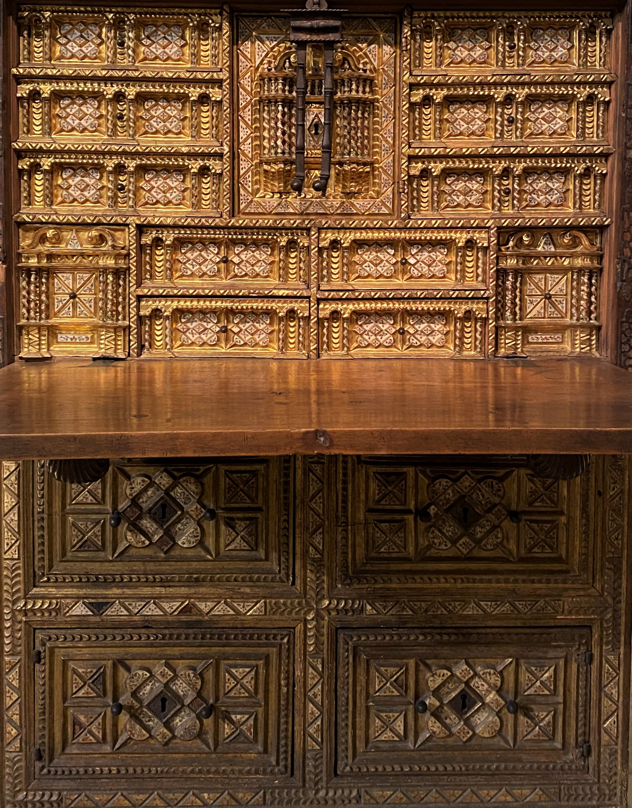
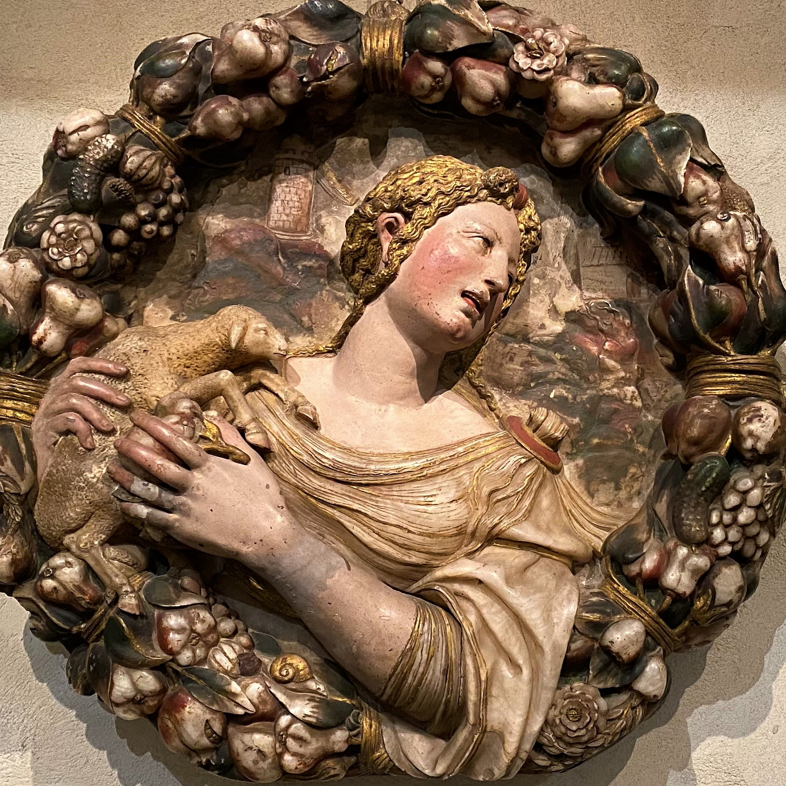
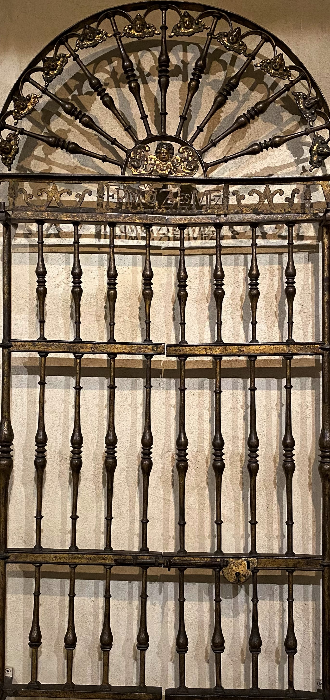
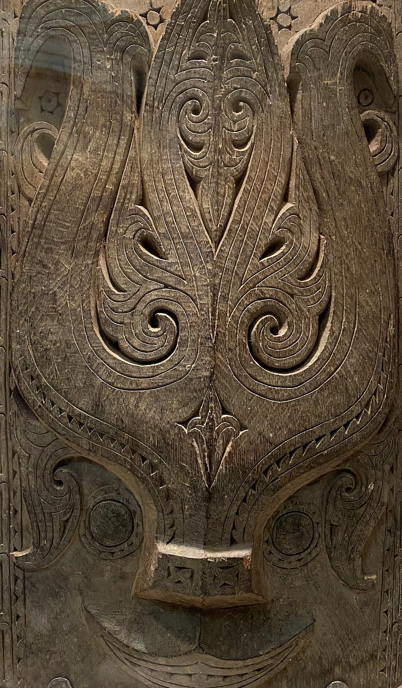
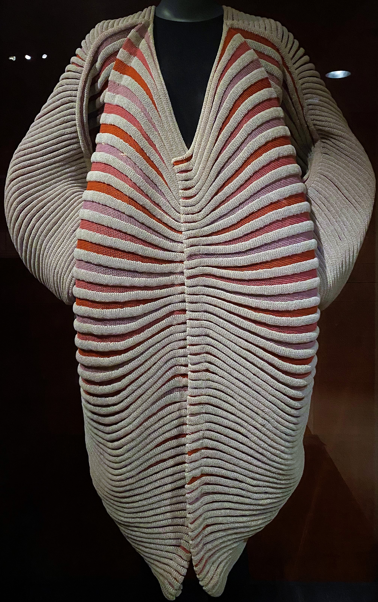
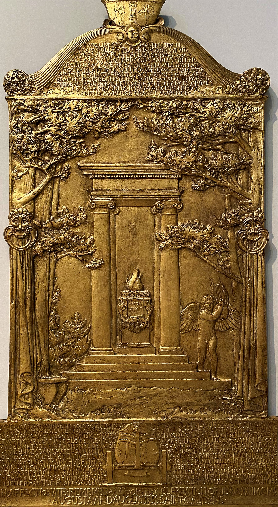

SURFACES at the METROPOLITAN MUSEUM of ART

Fragment of a Floor Mosaic with a Personification of Ktisi
Byzantine
Made 500-550

Venus, Mars and Cupid with Vulcan at his Forge
Italian
1454-after 1508

Panel of Cuenca Tile
Spanish
16th Century

Vargueño
(Drop-Front Desk on Chest)
Spanish
17th Century

Roundel:
Saint Agnes
(One of a Pair)
Spanish
16th Century

Grille
Spanish
17th Century

Toba Batak Artist
(Architectural Ornament)
Indonesia
Late 19th-Early 20th century
Front of a Coffin Platform
Northern Qi
6th-Early 7th Century

Seashell
Issey Miyake (Japanese)
1985

Cornish Celebration
Augustus Saint-Gaudens (American)
1905-06